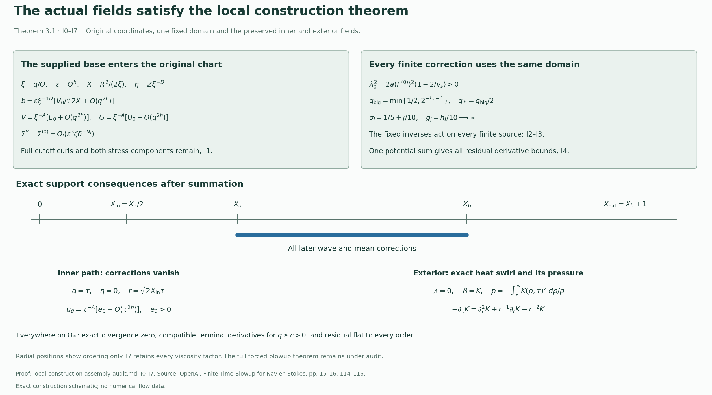

Construction of the forced Navier–Stokes blowup theorem
This construction proves Theorem 1.1 and Corollary 10.6 of OpenAI’s Finite Time Blowup for Navier–Stokes. The linked arguments construct the fields and supply the dependencies identified below.
The source is the original 166-page PDF, SHA256 0e779481c4da40bd28d1e642e1d8ca57447d129610df28dfa5a11e9af8ae228f. Theorem 1.1 is on page 1, the local construction theorem on pages 15–16, the leading-profile theorem on pages 32–34, and the final argument on pages 117–126. Bibliography and source locators identify the versions used.
The theorem concerns the smooth forced equations with the stated initial datum, supports, viscosity and comparison class. Its conclusion is blowup of a classical solution under this force; it makes no assertion of unforced blowup or nonexistence of weak solutions. Exposition: GPT-6 Astra (OpenAI).
1. The exact target and its supplied conclusions
For every prescribed \(\nu>0\), the construction gives a force \(f_\nu\in C_c^\infty(\mathbb R^3\times(0,\infty);\mathbb R^3)\), a compact set \(\mathcal K_\nu\subset\mathbb R^3\), and smooth fields \(u_\nu,p_\nu\) on \(\mathbb R^3\times[0,1)\) such that
\[ \partial_tu_\nu+(u_\nu\cdot\nabla)u_\nu-\nu\Delta u_\nu+\nabla p_\nu=f_\nu, \qquad \nabla\cdot u_\nu=0,\qquad u_\nu(\cdot,0)=0, \] \[ \operatorname{supp}u_\nu(\cdot,t)\cup\operatorname{supp}p_\nu(\cdot,t) \subset\mathcal K_\nu,\qquad \sup_{0\le t<1}\|u_\nu(t)\|_2<\infty,\qquad \limsup_{t\uparrow1}\|u_\nu(t)\|_\infty=\infty. \tag{A1} \]There is no smooth solution on the whole time interval \([0,\infty)\), with the same force and datum, whose kinetic energy is uniformly bounded. On the original torus \(\mathbb R^3/\mathbb Z^3\), the construction gives a smooth time-compact force and a solution smooth before time one, with the analogous velocity blowup. Its velocity and periodic pressure are supported in one fixed compact subset of the interior of \((-1/2,1/2)^3\) before time one. No global smooth periodic solution has the same datum and force.
Every row below is supplied by an actual construction in the linked proofs, not by assuming the target conclusion.
| Requirement | Complete supplying argument |
|---|---|
| One local field, its actual vector potential, Cartesian axis regularity and exact divergence | I0 and I4, from the constructed base and full correction potentials |
| One domain for every finite correction and every fixed derivative order | I2–I3 and K8; the choice depends on fixed base and primary-pulse margins |
| Every residual derivative tends to zero to arbitrary order on each bounded profile interval | I4.1–I4.9, using the stage-independent losses in L1–L5 |
| The actual potential and pressure derivatives have compatible one-sided limits away from the singular point | I5, Z7 and the exact heat integral in L6 |
| Compact velocity and pressure, exact equation and zero initial datum | F0–F1: cut the vector potential before taking curl, retain every nonlinear cutoff term, and define the full residual as force |
| Smooth compact force through and after time one | F2–F3: uniform derivative limits in all three terminal regions, compatible jets, and the original explicit cutoff series |
| Uniform energy and finite total dissipation | F4: integrate the actual compactly supported equation, then retain the full dissipation identity |
| Original inner-growth path survives localization | I6, F6: the unchanged inner angular profile is positive and every annular correction vanishes on that path |
| Comparison with an arbitrary smooth bounded-energy competitor, without a pressure-growth hypothesis | Comparison proof (1)–(64), with its actual inputs in F5 and the contradiction in F6 |
| Every prescribed positive viscosity, with the original singular time | F7: the full coordinate, velocity, pressure, force, support and energy transformations, including the inverse map on a competitor |
| Periodic pressure and velocity, nonoverlapping supports, smooth force, blowup and global comparison | F8: exact space-time scaling, locally finite periodization and the full nonlinear product identity |
2. The constructions supplying the local field
The construction order below records mathematical dependence. Links to a later exposition of an elementary identity do not change that dependence.
The coordinate, stress, pressure and moment identities are proved in G0–G6. The heat integral and all its derivatives are proved directly in L6.2–L6.10: that proof starts with the stated integral and integration by parts, and uses no constructed base or correction field. It is therefore available in the outer-profile construction despite its position in the exposition.
O0–O8 constructs the reference outer profile and its analytic axis pressure. H0–H6 replaces the exterior by the actual heat field, restores the changed moments and proves the outer stress direction and flat weight. The finite small-h condition in H5 is included in O8’s original ordering; its constant is uniform for the earlier fixed choices. No later step requires choosing a conflicting value of h.
The preserved pressure datum supplies the nonlinear analytic axis solution in J0–J6. Q0–Q9 constructs its continuation, inner flat factor and exact five-moment join. Q9 fixes the matching tolerances and transition length before the large amplitude and radial scale, then chooses the final widths. The bounds used for the earlier choices are uniform over the later width family. V0–V7 next chooses one finite radial frequency, restores all five moments and proves each of the six conclusions of the original leading-profile theorem. The analytic axis rectangle, the two distinct reserved intervals, the positive angular field, both endpoint directions and the exact heat exterior survive these operations.
At positive order n, D0–D6 uses only the leading profile and completed lower coefficients to solve the six-component system on one fixed radial interval. Its series converges there regardless of the finite size of the current source. The sparse derivative structure D3 is essential: a nonzero operator word of length k contains at most \(\lceil k/2\rceil\) parameter derivatives, while its radial integration has the factorial denominator \((k+1)!\). D5 proves a single parameter neighborhood for all radial derivatives at this fixed n, by allocating the available radius across each finite differentiation. The neighborhood may depend on n; the radial interval does not shrink.
Y0–Y7 completes that same order globally, with an explicit affine five-moment solve and exact support and pressure closure, before D is used at order n+1. This is induction on n, not an equation in unspecified higher coefficients. The five rows retain their original powers and amplitude factors. The two constant matrices are invertible for the fixed positive slope parameter, with no smallness requirement on the discrepancies. The corrections leave the separate mean-velocity patch untouched; they do not assert that the pressure equals its leading value on that earlier patch.
Z0–Z8 then constructs the actual base from this one sequence of completed coefficients. The velocity is obtained from the actual cut Stokes potentials, with every cutoff curl retained, and both stress entries use the same chosen sequence. Its finite-truncation comparison controls the full nonlinear residual and both stress divergences. The original component powers, the exceptional first-order heat contribution, the formal expansions, the unchanged mean patch and the exact exterior all have supplying proofs there. This is the actual base used by the later oscillations.
3. The correction cycle and its single actual sum
The torus, chart and support maps are fixed in W1–W3. The finite coloring and rational rectangle construction in W2 gives separation of closed auxiliary supports whenever slow supports overlap. Hence products of distinct labels, including differentiated fields, vanish after the actual physical evaluation. The covering is not inverted.
The supplied leading profile and base satisfy the full receiving maps in I1–I2. The exact chart factors give positive shear denominators, one fixed stress-cone margin and one band threshold. P0–P8 constructs the actual particular and homogeneous pulses, their normal pressure, complete curls and endpoint errors. C1–C8 constructs the positive primary amplitudes and the fixed signed inverse, with its complete quadratic remainder and all edge derivatives. The latter divides by the original primary amplitude, never by an accumulated signed amplitude.
The radial pressure and velocity maps are proved in R1–R8. T1–T4 proves the zero-mean torus inverse with its actual derivative bound, physical scaling, covering compatibility and full compact axial reconstruction. M1–M7 constructs the five-profile inverse on the supplied reserved interval and recomputes every pressure and nonlinear moment change. S1–S5 proves the finite harmonic and support induction, complete conservative equations and the exact retained flat residual.
These are the inputs actually used in K0–K8, in the source’s four-operation order. K4 forms its signed stress from the full Haar-averaged tangential residual, so the required auxiliary independence in C5 holds. K5 keeps the compact axial remainder. K6 solves the five exact rows and retains every new-new nonlinear product. K7 verifies both the improved residual and every accumulated-field and zero-moment assertion of the next finite state. It retains the original gain \(1/10\).
K8 and I2 fix the common domain before any correction stage. The higher-harmonic propagator is the same m=1 propagator times
\[ \exp\!\left[-(m^2-1)\int_w^v\varepsilon k^2|n_\Phi(s)|^2\,ds\right], \qquad 0\le w\le v\le L_s, \tag{A2} \]which is at most one for every nonzero integer m. Higher derivatives and the finite harmonic set change finite constants; they do not require a new value threshold. Every other inverse is fixed and linear in its target, with its edge weights retained. Thus the intersection of stage domains is not an unproved positive-domain assumption.
L0–L5 retains every coordinate, carrier-frequency and cylindrical-frame derivative. The physical derivative loss is independent of the stage. I4 then uses the actual potential increments and one sequence of shrinking cutoffs. For each requested residual derivative order and decay power, it compares the actual sum to one sufficiently high finite state. The full residual difference includes both old-new convection terms and the quadratic error term. No sum of uncontrolled finite-stage residuals is used.
The endpoint and exterior statements follow from I5–I6 with their actual base and correction representatives. The resulting fields therefore have all four properties of the original local construction theorem. F0–F8 uses precisely these fields to establish the target assertions in §1.

This support diagram and the exact factors it displays are proved in I0–I7. Radial positions indicate order, not numerical distances. Reproducible figure source.
4. Comparison and a quantitative consequence of the original path
The whole-space comparison proof is not inferred from a pressure formula that assumes decay of the competitor’s pressure. Equations (7)–(13) of the comparison audit derive equality of pressure gradients from the difference equation: after testing in time, the harmonic difference lies in \(H^{-3}(\mathbb R^3)\), and its Fourier transform must vanish. Equations (14)–(45) retain the complete expanding-cutoff flux, including the commutator’s outer contribution. Section 5 proves the exact Sobolev and double-Riesz bounds used there. F4 and compact smoothness of the constructed field on every shorter time interval supply all reference-field hypotheses in F5.
The positive inner path yields an additional precise formulation of the source’s stated limsup conclusion. Let \(A=1/2+h\), retain the source’s \(X_{\rm in}>0,e_0>0\), and set
\[ x_\tau=(\sqrt{2X_{\rm in}\tau},0,0). \]I6 and F6 give, for every sufficiently small \(\tau>0\),
\[ (u_\nu)_\theta(\sqrt\nu\,x_\tau,1-\tau) =\sqrt\nu\,\tau^{-A}\{e_0+O(\tau^{2h})\} \ge\frac{\sqrt\nu\,e_0}{2}\tau^{-A}. \tag{A3} \]The original remainder has one finite constant after all construction choices are fixed. Choose the time interval so that its magnitude is at most \(e_0/2\); the localization cutoffs also equal one there. At the displayed point \(e_\theta=(0,1,0)\), so A3 bounds an actual Cartesian component. Since the estimate holds for every sufficiently small \(\tau=1-t\), it proves
\[ \lim_{t\uparrow1}\|u_\nu(t)\|_\infty=\infty. \tag{A4} \]For the periodic scaling in F8, at \(\widetilde x_\tau=\lambda^{-1}\sqrt\nu\,x_\tau\) and \(\widetilde t_\tau=1-\lambda^{-2}\tau\), the corresponding lower bound is \(\lambda\sqrt\nu\,e_0\tau^{-A}/2\). Retaining \(\tau=\lambda^2(1-\widetilde t_\tau)\) gives the same full-limit conclusion with every scaling factor present. These are consequences of the already proved source path, not a novelty claim.
The same construction has the exact energy control from F4 and F7:
\[ \|u_\nu(t)\|_2^2+ 2\nu\int_0^t\|\nabla u_\nu(s)\|_2^2\,ds \le\nu^{5/2} \left(\int_0^t\|f(s)\|_2\,ds\right)^2, \qquad 0\le t<1, \tag{A5} \]where f is the actual viscosity-one force before applying F7. The component growth and bounded energy concern different norms of this same field, with their exact supplying estimates retained.
5. Scope of the theorem
The linked proofs supply the original theorem’s constructive inputs, including the complete leading profile, every global coefficient, the actual base, all finite correction states, their single physical sum and the compact terminal force. The final comparison and periodic arguments use those supplied fields. The construction order in Sections 2–3 supplies the inputs used by each successive argument.
The comparison refinements and A3–A5 are consequences of the same constructed fields. The source statements and the additional mathematical consequences remain identifiable in their respective arguments.
The linked constructions and final comparison prove the whole-space theorem and its periodic corollary. The lesson series develops the same arguments with examples and solved exercises.